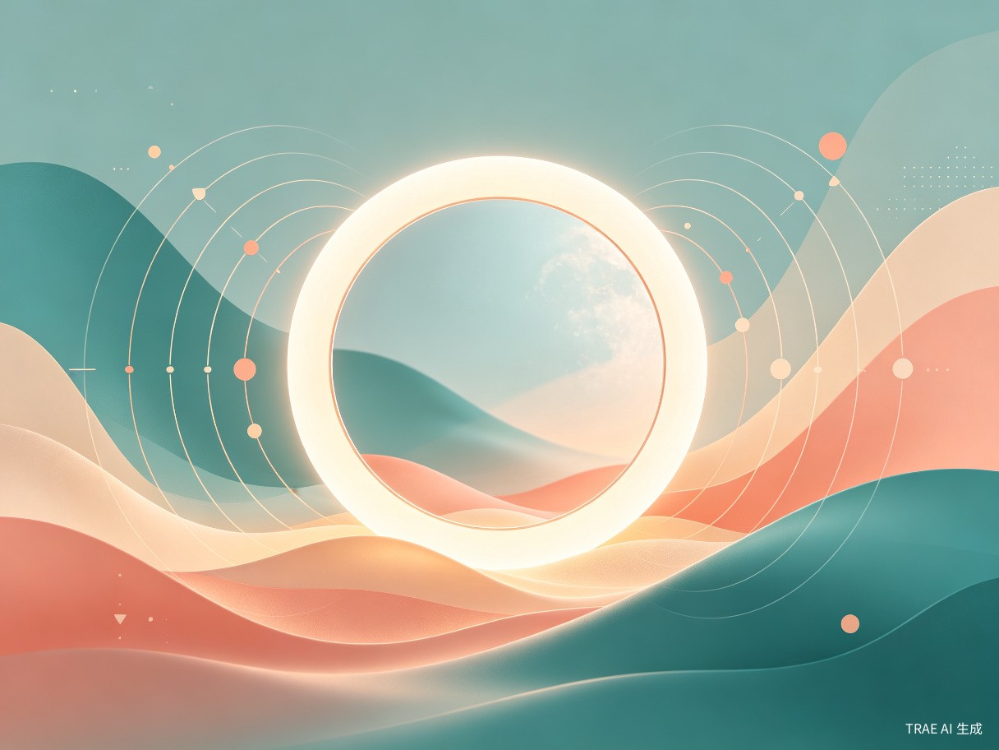

一面能照见内心世界的数字镜子，更是你的视觉与心理助手。
全球约 9.7 亿人 受心理健康问题困扰，而中国心理健康服务覆盖率不足 15%。传统心理咨询面临需求高但供给低、费用高但支付意愿低、病耻感高但求助率低的“三高三低”困境。人们渴望即时的情绪出口，却找不到安全、隐私、专业的陪伴。
每个人都会有情绪低落的时刻——可能是深夜加班后的孤独，可能是社交中难以言说的焦虑。我们想做的，不是一台冷冰冰的问答机器，而是一面能照见你内心真实感受的“镜子”。融合认知行为疗法（CBT）和接受与承诺疗法（ACT），用AI给每一份情绪以温柔的回应。
一款 Web 端数字心理陪伴系统（可拓展至微信小程序），融合多模态情绪感知、大模型对话、AI情绪可视化生成和微行动引导。它不是治疗师，而是24 小时在线的温暖陪伴者——听你说话、懂你表情、陪你走出情绪的迷雾。
核心用户群：18–35 岁的都市青年——他们面临职场压力、学业焦虑、情感困扰和社交疲劳。他们是数字原住民，习惯用手机解决一切，却找不到一个真正懂他们的情绪出口。
泛化用户群：

独处时莫名低落、睡不着、反复内耗——打开心语镜像，安静地聊几句，让情绪有个安全的出口。
被 deadline 追着跑、开会前紧张心慌——3 分钟快速情绪疏导，帮你调整状态再出发。
想了解自己的情绪规律？每周打开情绪雷达图，看见情绪的“形状”，建立自我觉察习惯。
有些事情不方便告诉身边人——AI 陪伴者不评判、不泄密、不设限，给你一个安全的倾诉空间。
现状：心理咨询预约周期长达 2-4 周，单次费用 300-800 元。社交媒体上的情绪树洞缺乏专业性，朋友家人未必能理解。大多数人选择沉默——情绪在沉默中发酵，直到爆发或崩塌。
心理健康不应该是奢侈品。心语镜像通过 AI 技术将专业心理学知识转化为可规模化、低成本、24小时在线的陪伴服务，让每一个需要在凌晨三点有人回应的人，都能得到一个温暖的答案。项目能成为国家心理健康服务体系的有力补充——不替代治疗师，但让治疗师够不到的人先被“接住”。
从“感到不适”到“寻求帮助”，传统路径平均耗时 6-12 个月。心语镜像将这一路径缩短为 0 秒——打开即用，无需预约、无需付费、无需解释。通过多模态情绪感知，系统能在用户自己还没说出口时，就感知到情绪的波动，把干预窗口前移到情绪滑坡之前。
全球数字心理健康市场预计 2030 年将达到 375 亿美元（年复合增长率 16.5%）。在中国，这片市场几乎空白——缺乏一个真正融合 AI + 循证心理学的国民级产品。心语镜像以 B2C 轻量服务切入，后续可拓展企业 EAP 心理关怀、学校心理健康教育等 B2B 场景，构建“个人 + 企业 + 机构”三层商业模式。
面部表情（本地特征提取）、语音语调 + 文本情感三维融合，生成压力/焦虑指数 (0-100)。三层递进式安全过滤——敏感词匹配 → BERT 危机意图分类 → 大模型二次审核。触发红线自动弹出心理援助热线，守护每一条生命的底线。
挂载 CBT、ACT、正念冥想等权威心理学资源，通过 Milvus 向量检索增强生成，确保回复循证。引入 ACT"一次一问"节奏与结构化 Prompt，明确 AI 是“陪伴者”而非“治疗师”，避免压迫感。
ECharts 动态看板：周度情绪雷达图、月度压力趋势图。根据实时情绪状态，文生图 AI 生成“每日心灵图卡”——焦虑时呈现蓝绿色流水，低落时呈现向上生长的暖光。用视觉疗愈心灵。
每次深度对话结束时，引导制定“小到不可能失败”的温和小行动（如深呼吸 3 次）。情绪反馈打分回流至系统，持续优化推荐策略——让每一次服务都比上一次更懂你。
前后端分离 · API 网关统一鉴权 · 本地隐私处理 + 云端智能分析
graph TB
subgraph FRONT["🖥️ 前端展示层"]
A1["React 18 + TypeScript + TailwindCSS"]
A2["对话界面"]
A3["情绪看板 (ECharts)"]
A4["心灵图卡"]
A5["微行动打卡"]
end
subgraph GATEWAY["🔐 API 网关层"]
B1["Nginx + Kong"]
B2["JWT 鉴权 · 限流熔断 · HTTPS"]
end
subgraph BACKEND["⚙️ 业务服务层"]
C1["对话引擎
(Spring Boot)"]
C2["情绪分析
(Python FastAPI)"]
C3["安全护栏
(AC自动机 + BERT)"]
C4["可视化服务
(Data API)"]
end
subgraph AI["🧠 AI 模型层"]
D1["大模型
Qwen3 / DeepSeek"]
D2["RAG 知识库
Milvus + bge"]
D3["文生图
Qwen-Image"]
D4["视觉/语音
OpenCV + Whisper"]
end
subgraph DATA["💾 数据存储层"]
E1["PostgreSQL"]
E2["Redis"]
E3["MinIO / OSS"]
E4["ELK 日志"]
end
A1 --> B1
B1 --> C1 & C2 & C3 & C4
C1 --> D1 & D2
C2 --> D4 & D1
C3 --> D1
C4 --> D3
C1 & C2 & C3 & C4 --> E1 & E2 & E3 & E4
classDef front fill:#4A90A4,color:#fff,stroke:none
classDef gateway fill:#357889,color:#fff,stroke:none
classDef backend fill:#2D3748,color:#fff,stroke:none
classDef ai fill:#E8A87C,color:#2D3748,stroke:none
classDef data fill:#8B9DAF,color:#fff,stroke:none
class A1,A2,A3,A4,A5 front
class B1,B2 gateway
class C1,C2,C3,C4 backend
class D1,D2,D3,D4 ai
class E1,E2,E3,E4 data
以下为模拟数据展示——系统每周自动为用户生成 7 维情绪分布雷达图
面部特征提取和语音转写在浏览器端完成，原始生物数据绝不上传，仅传输脱敏特征向量。
AC 自动机敏感词匹配 → BERT 危机意图四级分类 → 大模型独立安全审核，防漏报也防误报。
RAG 锚定 + 独立幻觉检测模型 + 受限解码（低 temperature）+ 高风险对话人工审核，五层防御体系。
对照 HIPAA / GDPR / 《个人信息保护法》，分层授权、数据加密、隔离存储，数据绝不用于模型训练。
System Prompt 硬约束：不诊断、不治疗、不用药。AI 是陪伴者而非治疗师，超越边界自动引导求助专业渠道。
14 岁以下需监护人授权，14-18 岁功能受限、风险阈值更敏感，内容摘要定期推送监护人。
| 创新维度 | 核心突破 | 差异点 |
|---|---|---|
| 隐私架构 | 本地特征提取 + 云端融合分析 | 业内首创：既保护生物隐私，又不牺牲多模态感知能力 |
| Prompt 工程 | ACT 疗法节奏固化进 System Prompt | 超越通用的“温暖聊天”，实现临床级对话节律控制 |
| 安全治理 | 五层纵深防御体系 | 从关键词到人工兜底，每层可独立拦截和审计 |
| 疗愈闭环 | 感知 → 生成 → 呈现 → 反馈 | 不只是聊天，更是视觉疗愈 + 数据看板 + 行动引导的完整闭环 |
| 技术生态 | 全链路国产模型优先 | Qwen 系列、bge 系列、ECharts，符合信创要求 |
面向国赛 · 民生为本：心语镜像不是在炫耀 AI 技术有多强，而是在回答一个朴素的问题——当一个人深夜被情绪淹没的时候，谁能第一时间接住 TA？我们相信，科技的温度，在于让最需要帮助的人，不用等、不用怕、不用解释，就能被温柔以待。